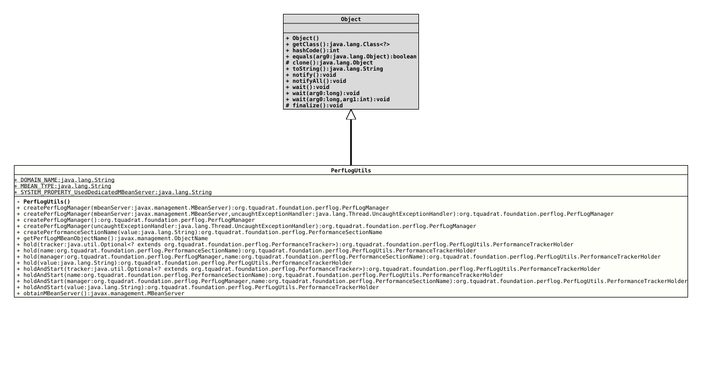

Class PerfLogUtils
Several tools for the Foundation Performance Logging and Monitoring.
- Author:
- Thomas Thrien (thomas.thrien@tquadrat.org)
- Version:
- $Id: PerfLogUtils.java 1218 2026-05-02 15:17:24Z tquadrat $
- Since:
- 0.25.0
- UML Diagram
-

UML Diagram for "org.tquadrat.foundation.perflog.PerfLogUtils"
{kind=link}
-
Nested Class Summary
Nested ClassesModifier and TypeClassDescriptionstatic final classA holder forPerformanceTrackerthat allows to use it with try-with-resources. -
Field Summary
FieldsModifier and TypeFieldDescriptionstatic final StringThe domain name part of theObjectNameidentifying thePerfLogMBeanin the MBean server: "org.tquadrat.foundation.PerfLog"static final Stringstatic final StringThe name of the system property that controls whether to use a dedicatedMBeanServer: "org.tquadrat.foundation.perflog.UseDedicatedMBeanServer". -
Constructor Summary
Constructors -
Method Summary
Modifier and TypeMethodDescriptionstatic final PerfLogManagerCreates an instance ofPerfLogManagerthat handles the connection with the underlyingPerfLogMBean.static final PerfLogManagercreatePerfLogManager(Thread.UncaughtExceptionHandler uncaughtExceptionHandler) Creates an instance ofPerfLogManagerthat handles the connection with the underlyingPerfLogMBean.static final PerfLogManagercreatePerfLogManager(MBeanServer mbeanServer) Creates an instance ofPerfLogManagerthat handles the connection with the underlyingPerfLogMBean.static final PerfLogManagercreatePerfLogManager(MBeanServer mbeanServer, Thread.UncaughtExceptionHandler uncaughtExceptionHandler) Creates an instance ofPerfLogManagerthat handles the connection with the underlyingPerfLogMBean.static PerformanceSectionNameCreates a new instance for an implementation ofPerformanceSectionNamebased on the given value.static final ObjectNameReturns theObjectNamefor thePerfLogMBean.static final PerfLogUtils.Holderhold(Optional<? extends PerformanceTracker> tracker) Creates a holder for the givenPerformanceTracker.static final PerfLogUtils.HolderholdAndStart(Optional<? extends PerformanceTracker> tracker) Creates a holder for the givenPerformanceTrackerand immediately starts it.static final MBeanServerRetrieves theMBeanServerthat is used for the registration of thePerfLogMBean.
-
Field Details
-
DOMAIN_NAME
The domain name part of the
ObjectNameidentifying thePerfLogMBeanin the MBean server: "org.tquadrat.foundation.PerfLog".It is also used for the creation of the MBean server, if a dedicated MBean server is needed; usually the Platform MBean server is used.
- See Also:
-
MBEAN_TYPE
- See Also:
-
SYSTEM_PROPERTY_UsedDedicatedMBeanServer
The name of the system property that controls whether to use a dedicated
MBeanServer: "org.tquadrat.foundation.perflog.UseDedicatedMBeanServer".If not provided or set to
false, the platform MBean server is used.- See Also:
-
-
Constructor Details
-
PerfLogUtils
private PerfLogUtils()Not instance allowed for this class!
-
-
Method Details
-
createPerfLogManager
Creates an instance of
PerfLogManagerthat handles the connection with the underlyingPerfLogMBean.- Parameters:
mbeanServer- The MBean server that holds thePerfLogMBean.- Returns:
- The new performance logging manager.
-
createPerfLogManager
public static final PerfLogManager createPerfLogManager(MBeanServer mbeanServer, Thread.UncaughtExceptionHandler uncaughtExceptionHandler) Creates an instance of
PerfLogManagerthat handles the connection with the underlyingPerfLogMBean.- Parameters:
mbeanServer- The MBean server that holds thePerfLogMBean.uncaughtExceptionHandler- The implementation ofThread.UncaughtExceptionHandlerthat is used for the timeout monitoring thread.- Returns:
- The new performance logging manager.
-
createPerfLogManager
Creates an instance of
PerfLogManagerthat handles the connection with the underlyingPerfLogMBean.- Returns:
- The new performance logging manager.
-
createPerfLogManager
public static final PerfLogManager createPerfLogManager(Thread.UncaughtExceptionHandler uncaughtExceptionHandler) Creates an instance of
PerfLogManagerthat handles the connection with the underlyingPerfLogMBean.- Parameters:
uncaughtExceptionHandler- The implementation ofThread.UncaughtExceptionHandlerthat is used for the timeout monitoring thread.- Returns:
- The new performance logging manager.
-
createPerformanceSectionName
Creates a new instance for an implementation ofPerformanceSectionNamebased on the given value.- Parameters:
value- The value for the new name.- Returns:
- The new name.
-
getPerfLogMBeanObjectName
Returns theObjectNamefor thePerfLogMBean.- Returns:
- The object name for the performance logging MBean.
-
hold
Creates a holder for the given
PerformanceTracker.This is a convenience method that allows to use a performance tracker with try-with-resources.
- Parameters:
tracker- An instance ofOptionalthat holds the tracker.- Returns:
- A holder for the given tracker.
- Throws:
ClassCastException- If called with an instance ofHolderinstead of a rawPerformanceTracker.
-
holdAndStart
public static final PerfLogUtils.Holder holdAndStart(Optional<? extends PerformanceTracker> tracker) Creates a holder for the given
PerformanceTrackerand immediately starts it.This is a convenience method that allows to use a performance tracker with try-with-resources.
- Parameters:
tracker- An instance ofOptionalthat holds the tracker.- Returns:
- A holder for the given tracker.
-
obtainMBeanServer
Retrieves the
MBeanServerthat is used for the registration of thePerfLogMBean.- Returns:
- The MBean server.
- See Also:
-